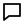
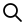
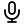
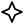

لغة تصميم.
لا حاجز لغة.
كيف تبدو واجهة ذكاء اصطناعي تفكّر بالعربية؟ بدأ نسق من هذه الفكرة: لغة بصرية تجمع جرأة الهوية التحريرية وهدوء واجهات الاستخدام.
من الحبر والورق، إلى المحادثات والمساعدين. نظام واحد يترك مساحة للفكرة، ويمنح كل تفصيل مكانه.
ليست كل الأفكار
متشابهة. لكنّها
تحتاج إلى نسق.
وضوح في التفاصيل. شخصية في التعبير.عربي.
ذكي.
بلا تكلّف.
✳وحدات صغيرة.
معنى أكبر.
خمس وحدات هندسية تلتقي في رمز واحد. لغة بسيطة تعكس ترتيب الأفكار وتواصلها.
لكل حرف،
مساحته.
عناوين عربية واضحة.
واجهات بخط المراعي.
حبر. ورق.
ومساحة للتعبير.
قاعدة دافئة وهادئة، يقابلها أحمر حاضر. لكل لون مساعد شخصية، دون أن يطغى على المحتوى.
حين يصبح النظام
جزءًا من يومك.
المحادثة، البحث، والمعرفة — أمثلة واجهة من لغة واحدة.
بماذا تفكّر اليوم؟
من أول فكرة، إلى آخر تفصيل.
لنجد الكلمات التي تشبهك.
من الفكرة،
إلى احتمالات.
المعرفة،
أقرب.
اطرح السؤال.
وافتح باب الفكرة.
صُمّمت التفاصيل،
لتعمل معًا.
ثمانية عشر مكوّنًا، حالات واضحة، وتفاعل مناسب للعربية.




أفكارك،
بصوتك أنت.
واجهة AI بطابع عربي.
تمنحك مساحة للفكرة، وتحافظ على أسلوبك.
مسودة اليوم.
فكرة الغد.
✳بحث. كتابة.
وضوح.
✦لغة يفهمها المصمم.
وقواعد يفهمها المساعد.
المتغيرات والمكونات والمهارة المرفقة تنقل الهوية من مرجع بصري إلى تعليمات قابلة للتطبيق.
اكتشف مهارة نسق ↖name: nasaq-ui 01 Understand the interface. 02 Apply the Nasaq tokens. 03 Compose with base components. 04 Respect Arabic & RTL. 05 Verify the experience.